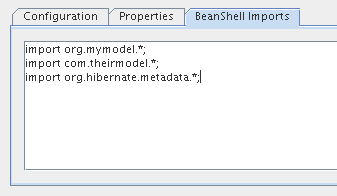

The BeanShell Editor is used to edit and execute custom java code. It will be showed alongside the HQL Editor when a session factory is opened.
Inside the BeanShell Editor you can execute custom java code. It's most probably that you will test java code accessing the hibernate session, whose name is session
In order to get the results shown in Output Window the last statement of the executed code must return something.
To be correctly interpreted, the java code will need to import some classes.
You can write down the imports in the editor, or can specify them in the session factory's configuration dialog.
The last option is more comfortable, as those packages and classes will be imported before every execution.

The packages org.hibernate and org.hibernate.criterion are automatically imported.
Here are some simple examples of how the code may look:
Criteria c = session.createCriteria(
MyBusinessObject.class);
c.list();
Query q = session.createQuery(
"select bo from MyBusinessObject bo " +
"join bo.relation rel " +
"where rel.id = ?");
q.setParameter(0, new Long(1));
q.list();
The shortcut keys can be customized in the options dialog (Tools | Options | Keymap | Hibernate Console)